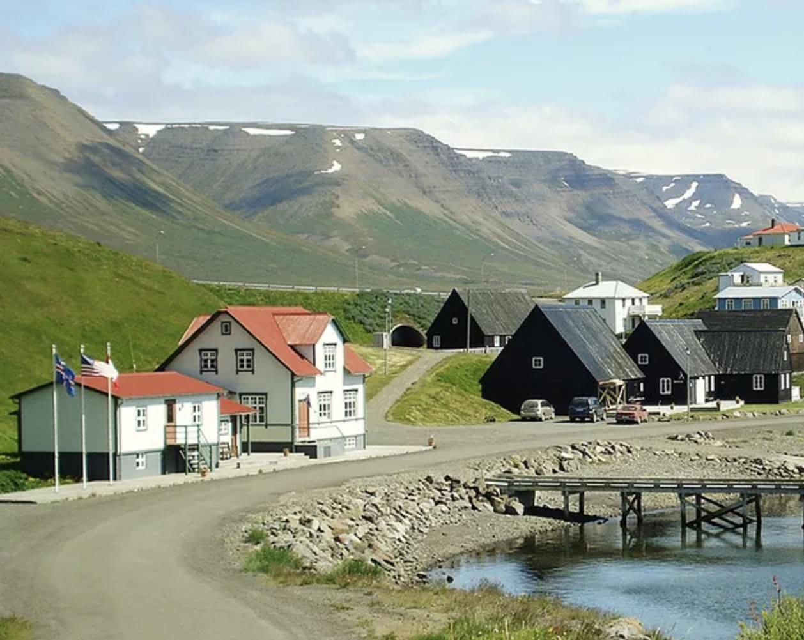

<div id="market_wrap">
    <div class="container">
        <div class="row">
            <div class="col-lg-8 market_img_wrap">
              
            </div>
            <div class="col-lg-4 market_text">
              <div class="market_heading_wrap">
              <h2 class="market_heading">
                Bændamarkaður<br> Hofsósi
              </h2>
              </div>
              <div class="market_info">
              <p>Bændamarkaðurinn í Hofsósi fer fram í hinu menningarsögulega Pakkhúsi á Hofsósi sem er hluti af húsasafni Þjóðminjasafns Íslands. Þarna er boðið upp á norðlenskar afurðir frá bændum og öðrum framleiðendum og handverksfólki. Hér fyrir neðan er listi yfir þá aðila sem eru þátttakendur í bændamarkaðinum í ár.</p><br>
              <p>Þú getur smellt á framleiðanda til að fá frekari upplýsingar um vörurnar og hvernig hægt er að nálgast þær.</p>
              <div><a class="btn btn-primary btn-xl js-scroll-trigger" routerLink="/bm-hofsos">Opna yfirlitskort</a></div>
            </div>
            </div>
        </div>
    </div>
</div>
